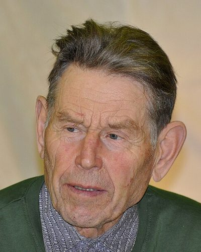

Ideologies / Green
What is Eco Authoritarianism?
Eco Authoritarianism is a political ideology in the Green family. Linkola held that democracy and consumer freedom cannot stop ecological destruction, because people will not vote to give up comfort. He called for a strong central authority to end economic growth, dismantle most industry and sharply reduce both consumption and population. The survival of life as a whole ranks above individual human rights.
Only a firm hand can stop the ecological collapse.
Defined from: Pentti Linkola, Voisiko elämä voittaa (in English: Can Life Prevail?) (2004)
See how close you are to Eco Authoritarianism Dare a friend to answer as one


Where Eco Authoritarianism stands on 13 axes
Each axis runs from 0 to 100. A score of 50 is the middle. On a classic compass it sits in the Authoritarian Left quadrant.
| Axis | Position | Score | In words |
|---|---|---|---|
| EconomyMarket to Planned | 85 | Very strongly Planned | |
| OwnershipPrivate to Collective | 70 | Strongly Collective | |
| RightsLiberty to Security | 100 | Very strongly Security | |
| GovernmentDemocracy to Autocracy | 95 | Very strongly Autocracy | |
| StructureDecentralised to Centralised | 90 | Very strongly Centralised | |
| NationInternationalist to Nationalist | 70 | Strongly Nationalist | |
| ImmigrationMulticulturalist to Assimilationist | 75 | Strongly Assimilationist | |
| ValuesProgressive to Traditional | 65 | Leans Traditional | |
| TechnologyAccelerationist to Precautionary | 95 | Very strongly Precautionary | |
| EnvironmentIndustrialist to Environmentalist | 100 | Very strongly Environmentalist | |
| ReligionSecular to Religious | 20 | Strongly Secular | |
| MilitaryPacifist to Militarist | 80 | Strongly Militarist | |
| TradeFree Trade to Protectionist | 80 | Strongly Protectionist |
Ideologies closest to Eco Authoritarianism
- Platonic Guardianship74% alike
- Kautilyan Statecraft68% alike
- Strasserism68% alike
- Ujamaa (African Socialism)68% alike
- Monarcho Brezhnevism67% alike
Its opposite on this map is Crypto Anarchism, at 10%.
Parties near Eco Authoritarianism
- Communist Party of CubaCuba. Conceptualización del Modelo Económico y Social Cubano (2021)68% alike
- Communist Party of ChinaChina. Constitution of the Communist Party of China (2022)63% alike
- Communist Party of VietnamVietnam. Platform for National Construction (2011)62% alike
- SWAPO of 1976Namibia. Political Programme of the South West Africa People's Organisation (1976)60% alike
Common questions
What is Eco Authoritarianism?
Eco Authoritarianism is a political ideology in the Green family. Linkola held that democracy and consumer freedom cannot stop ecological destruction, because people will not vote to give up comfort. He called for a strong central authority to end economic growth, dismantle most industry and sharply reduce both consumption and population. The survival of life as a whole ranks above individual human rights.
What does Eco Authoritarianism believe?
In one line: Only a firm hand can stop the ecological collapse. Its strongest positions are Security, Environmentalist, Autocracy. Linkola held that democracy and consumer freedom cannot stop ecological destruction, because people will not vote to give up comfort. He called for a strong central authority to end economic growth, dismantle most industry and sharply reduce both consumption and population. The survival of life as a whole ranks above individual human rights.
Who founded Eco Authoritarianism?
Eco Authoritarianism is defined here from Voisiko elämä voittaa (in English: Can Life Prevail?) (2004) by Pentti Linkola. The thinker most tied to it is Pentti Linkola (1932 to 2020).
Is Eco Authoritarianism left wing or right wing?
On a classic two axis compass Eco Authoritarianism falls in the Authoritarian Left quadrant, which means the economic left and the authoritarian side. Left and right hide a lot, though, which is why EthosScales scores it on thirteen separate axes.
How is Eco Authoritarianism different from Platonic Guardianship?
They are close: 74% alike. The biggest gaps are on Environment, where Eco Authoritarianism scores 100 and Platonic Guardianship scores 45, and Religion, where Eco Authoritarianism scores 20 and Platonic Guardianship scores 60. On each axis, 0 is one end and 100 is the other.
Think this is wrong? Suggest a correction. The scores are editorial estimates.